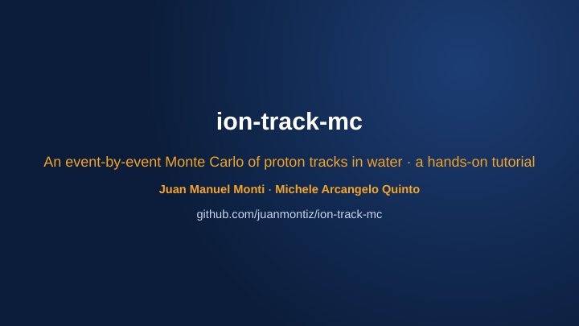
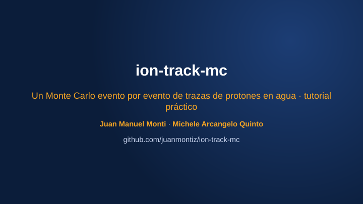

Event by eventEvento por evento
Watch a track being builtCómo se construye una traza
Each dot is one collision of the proton with a water molecule, in the order the code samples it, coloured by process. Between collisions the proton flies in a straight line and loses no energy. The path turns amber while the projectile travels as neutral hydrogen (H⁰) after capturing an electron. Hover over a collision to see its details; click a process to hide it. Cada punto es una colisión del protón con una molécula de agua, en el orden en que el código la muestrea, coloreada según el proceso. Entre colisiones el protón vuela en línea recta y no pierde energía. El camino se vuelve ámbar mientras el proyectil viaja como hidrógeno neutro (H⁰), después de capturar un electrón. Al pasar el cursor sobre una colisión se ven sus datos; un clic en un proceso lo oculta.
What the code simulatesQué simula el código
From a list of deposits to radiobiologyDe una lista de depósitos a la radiobiología
A proton with an energy from about 10 keV upwards enters a block of water. On its way it collides with water molecules thousands of times: in each collision it loses a little energy, may knock out an electron, may capture an electron and continue as neutral hydrogen, or may be slightly deflected, until it stops. The code follows every one of those collisions individually. The result is a list of energy deposits — how much, where and by which process — and everything else is computed from that list. Un protón de unos 10 keV o más entra en un bloque de agua. En su camino choca con moléculas de agua miles de veces: en cada colisión pierde un poco de energía, puede arrancar un electrón, puede capturar un electrón y seguir como hidrógeno neutro, o puede desviarse levemente, hasta detenerse. El código sigue cada una de esas colisiones por separado. El resultado es una lista de depósitos de energía —cuánta, dónde y por qué proceso— y todo lo demás se calcula a partir de esa lista.
Track pictureImagen de la traza
Every collision of one proton, coloured by process.Cada colisión de un protón, coloreada según el proceso.
analysis/visualization.py
Stopping power S(E)Poder de frenado S(E)
Mean energy lost per nm at energy E.Energía media perdida por nm a la energía E.
analysis/stopping_power.py
Depth–dose (Bragg) curveCurva de Bragg (dosis–profundidad)
Dose versus depth for a beam.Dosis en función de la profundidad para un haz.
scoring/dose.py, analysis/beam.py
Radial dose, 2D dose mapsDosis radial, mapas de dosis 2D
Dose versus distance from the track axis.Dosis en función de la distancia al eje de la traza.
scoring/dose.py
LET: L̄T, L̄DTEL: L̄T, L̄D
Track- and dose-averaged linear energy transfer.Transferencia lineal de energía promediada en traza y en dosis.
scoring/radiobiology.py
Lineal energy y, specific energy zEnergía lineal y, energía específica z
Energy deposited in one small spherical site.Energía depositada en un sitio esférico pequeño.
scoring/radiobiology.py
The physics model in plain wordsEl modelo físico en palabras simples
Seven steps, from free flight to the end of the trackSiete pasos, del vuelo libre al final de la traza
- Collisions are discrete events. Between two collisions the proton flies in a straight line and loses no energy. All energy loss happens at collisions. Las colisiones son eventos discretos. Entre dos colisiones el protón vuela en línea recta y no pierde energía. Toda la pérdida de energía ocurre en las colisiones.
- The distance to the next collision is random. With N molecules per nm³ and total cross section σtot(E), the mean free path is λ = 1/(Nσtot); the actual step is drawn from an exponential distribution with that mean. La distancia a la próxima colisión es aleatoria. Con N moléculas por nm³ y sección eficaz total σtot(E), el camino libre medio es λ = 1/(Nσtot); el paso se sortea de una distribución exponencial con esa media.
- Which process happens is random too. One of five processes is chosen with probability σc/σtot. Qué proceso ocurre también es aleatorio. Se elige uno de cinco procesos con probabilidad σc/σtot.
- The charge state changes along the track. A “proton” track is really a hydrogen ion switching back and forth between H⁺ and H⁰, each with its own cross sections. This matters most at low energy. El estado de carga cambia a lo largo de la traza. Una traza de «protón» es en realidad un ion de hidrógeno que alterna entre H⁺ y H⁰, cada uno con sus propias secciones eficaces. Esto importa sobre todo a baja energía.
- Energy lost per collision comes from tables. The mean energy left at the site and the mean δ-electron energy are tabulated, from CDW-EIS, Miller–Green and classical models — the same ones TILDA-V uses. La energía perdida en cada colisión sale de tablas. La energía media dejada en el sitio y la energía media del electrón δ están tabuladas, a partir de modelos CDW-EIS, Miller–Green y clásicos, los mismos que usa TILDA-V.
- δ-electrons are deposited on the spot. An ejected electron gives all its energy to the water where it was created; it is not transported further. Los electrones δ se depositan en el lugar. Un electrón eyectado entrega toda su energía al agua donde se creó; no se transporta.
- The track ends when the proton’s energy falls below the lowest tabulated energy (8 keV). La traza termina cuando la energía del protón cae por debajo de la menor energía tabulada (8 keV).
The five processesLos cinco procesos
| ProcessProceso | What happensQué pasa | Charge stateEstado de carga |
|---|---|---|
| IonizationIonización | an electron is knocked out of the molecule and flies off (a δ-electron)se arranca un electrón de la molécula, que sale despedido (un electrón δ) | unchangedsin cambio |
| ExcitationExcitación | the molecule is left in an excited statela molécula queda en un estado excitado | unchangedsin cambio |
| Electron captureCaptura electrónica | H⁺ takes an electron from the moleculeel H⁺ toma un electrón de la molécula | H⁺ → H⁰ |
| Electron lossPérdida electrónica | H⁰ loses its electronel H⁰ pierde su electrón | H⁰ → H⁺ |
| Elastic scatteringDispersión elástica | the projectile is deflected by the nuclei and transfers a little recoil energylos núcleos desvían al proyectil, que les transfiere un poco de energía de retroceso | unchangedsin cambio |
σ: effective target area of one water molecule for each process. λ = 1/(Nσtot): mean free path between collisions (water: N ≈ 33.4 nm⁻³).σ: área efectiva que una molécula de agua ofrece a cada proceso. λ = 1/(Nσtot): camino libre medio entre colisiones (agua: N ≈ 33,4 nm⁻³).
Fraction of the path travelled as H⁺ or H⁰ in equilibrium, from the balance of capture and loss: fH⁺ = σL/(σC+σL). Below ~100 keV the projectile spends a large part of its path as neutral hydrogen.Fracción del camino recorrida como H⁺ o H⁰ en equilibrio, a partir del balance entre captura y pérdida: fH⁺ = σL/(σC+σL). Por debajo de ~100 keV el proyectil pasa una gran parte del camino como hidrógeno neutro.
ValidationValidación
Stopping power: an output, not an inputPoder de frenado: un resultado, no un dato de entrada
The stopping power emerges from the sampled collisions. The plot compares the model’s charge-equilibrium stopping power (the exact expectation of its collision rules, which the Monte Carlo reproduces; see the tests) with NIST PSTAR for liquid water and with five sets of measurements. Hover over a point to see its source; click a legend entry to hide it. El poder de frenado surge de las colisiones muestreadas. El gráfico compara el poder de frenado del modelo en equilibrio de carga (el valor esperado exacto de sus reglas de colisión, que el Monte Carlo reproduce; ver los tests) con NIST PSTAR para agua líquida y con cinco conjuntos de mediciones. Al pasar el cursor sobre un punto se ve su fuente; un clic en la leyenda oculta una serie.
- From 0.5 to 2 MeV the model agrees with PSTAR within 4%.Entre 0,5 y 2 MeV el modelo coincide con PSTAR dentro del 4 %.
- Near the maximum (20–200 keV) it is 18–32% above PSTAR. The measurements there lie between PSTAR and the model, closer to the model: the model is about 10–15% above them.Cerca del máximo (20–200 keV) está entre 18 y 32 % por encima de PSTAR. Ahí las mediciones quedan entre PSTAR y el modelo, más cerca del modelo: este las supera en un 10–15 %.
- Above 5 MeV it is about 8% below PSTAR.Por encima de 5 MeV queda un 8 % por debajo de PSTAR.
| Energy (keV)Energía (keV) | ModelModelo (keV/µm) | PSTAR (keV/µm) | Model / PSTARModelo / PSTAR |
|---|
Dose and LETDosis y TEL
A beam is many tracks on the same engineUn haz son muchas trazas en el mismo motor
Scorers watch every deposit as it happens and keep adding up across tracks, so at the end they hold the dose of the whole beam. These results come from a pencil beam of 50 protons of 1 MeV, simulated with the code collision by collision. Los scorers observan cada depósito en el momento en que ocurre y van sumando traza tras traza, así que al final contienen la dosis de todo el haz. Estos resultados vienen de un haz pincel de 50 protones de 1 MeV, simulado con el código colisión por colisión.
Dose rises slowly with depth and peaks just before the end of the range (about 23 µm at 1 MeV).La dosis crece lentamente con la profundidad y alcanza su máximo justo antes del final del alcance (unos 23 µm a 1 MeV).
Dose per proton versus distance from the track axis, whole track. Since δ-electrons are not transported, the dose is concentrated within a few nm of the axis (see limitations).Dosis por protón en función de la distancia al eje, traza completa. Como los electrones δ no se transportan, la dosis queda concentrada a pocos nm del eje (ver limitaciones).
One whole 1 MeV track, from micrometres to nanometresUna traza completa de 1 MeV, de micrómetros a nanómetros
All 28 000 collisions of a single 1 MeV proton. Drag to zoom: at the scale of the whole track it looks like a line; zoom into a few nanometres to see the individual collisions, and into the last micrometre to see them crowd together where the proton slows down.Las 28 000 colisiones de un único protón de 1 MeV. Arrastrar el cursor hace zoom: a la escala de la traza completa parece una línea; a unos pocos nanómetros se ven las colisiones individuales, y en el último micrómetro, cómo se amontonan donde el protón se frena.
How the code is organisedCómo está organizado el código
Small packages, small interfacesPaquetes chicos, interfaces chicas
The package is split by responsibility. Each part only talks to the others through a small interface, so you can read one without the rest. Every sub-package has its own README with the physics and the derivations.El paquete está dividido por responsabilidad. Cada parte se comunica con las demás a través de una interfaz chica, así que se puede leer una sin las otras. Cada subpaquete tiene su propio README con la física y las deducciones.
What happens in one collisionQué pasa en una colisión
One pass of the loop in transport/engine.py (TrackEngine._transport_proton) is one collision:Una pasada del bucle de transport/engine.py (TrackEngine._transport_proton) es una colisión:
- Proton at position r, energy E, charge q. Is E inside the tabulated range? If not, stop.Protón en la posición r, energía E, carga q. ¿Está E dentro del rango tabulado? Si no, se detiene.
- Sample the step s (exponential, mean 1/Nσtot) —
sampler.sample_stepSortear el paso s (exponencial, media 1/Nσtot) —sampler.sample_step - Move: r ← r + s · direction (no energy lost in flight)Mover: r ← r + s · dirección (sin pérdida de energía en vuelo)
- Choose the process c with probability σc/σtot —
sampler.select_channelElegir el proceso c con probabilidad σc/σtot —sampler.select_channel - Apply it: subtract the energy lost; capture/loss change q; elastic changes the direction; ionization creates a δ-electronAplicarlo: restar la energía perdida; captura/pérdida cambian q; la elástica cambia la dirección; la ionización crea un electrón δ
- Record the deposit and notify every scorer; put the δ-electron, if any, on the stackRegistrar el depósito y avisar a cada scorer; poner el electrón δ, si lo hay, en la pila
- ↻ back to the top, until the proton stops↻ volver al principio, hasta que el protón se detiene
Every simulation in four stepsToda simulación en cuatro pasos
Load the tables, attach a scorer, transport, plot. A beam with LET bookkeeping is one call:Cargar las tablas, enganchar un scorer, transportar, graficar. Un haz con el cálculo de TEL es una sola llamada:
from ion_track_mc.analysis.beam import run_beam # 1. load the tables: see notebooks/minimal_script.py # 2. a scorer watches every deposit: dose vs depth bragg = make_bragg_curve_scorer( WATER, z_edges=np.linspace(0, 26e3, 53), transverse_half_width_nm=1e6) # 3. transport 30 protons of 1 MeV res = run_beam(WATER, xs, edep_tables, eemean_tables, n_particles=30, E_beam_eV=1e6, scorers=[bragg], seed=0, let_segment_length_nm=1000.0) # 4. read the results dose = bragg.dose_Gy()[0, 0, :] # Gy per depth bin print(res.track_averaged_LET(), # eV/nm res.dose_averaged_LET())
Units inside the code: energy in eV, length in nm, cross sections in nm². LET in eV/nm equals keV/µm.Unidades dentro del código: energía en eV, longitud en nm, secciones eficaces en nm². La TEL en eV/nm es igual a keV/µm.
Get startedEmpezar
In the browser, on your computer, or as a libraryEn el navegador, en una computadora propia o como biblioteca
Three guided notebooks — nothing to install in ColabTres notebooks guiados: en Colab no hay que instalar nada
01 · Full pipeline walkthroughRecorrido completo
Cross sections and mean free path, one proton’s track, stopping power (Monte Carlo vs analytic, vs NIST PSTAR, vs experiment), charge-state equilibrium, a Bragg curve, and how LET depends on the scale it is measured at.Secciones eficaces y camino libre medio, la traza de un protón, poder de frenado (Monte Carlo vs analítico, vs NIST PSTAR, vs experimento), equilibrio de carga, una curva de Bragg, y cómo la TEL depende de la escala en que se mide.
02 · Beam simulationSimulación de un haz
500 protons at 200 keV/u with a 5% energy spread: beam Bragg curve and radial dose, pencil-beam and broad-beam dose maps, energy-loss spread between protons, beam-averaged LET.500 protones de 200 keV/u con una dispersión de energía del 5 %: curva de Bragg y dosis radial del haz, mapas de dosis de haz pincel y haz ancho, dispersión de la pérdida de energía entre protones, TEL promediada en el haz.
03 · Track visualizationVisualización de trazas
What a track looks like, collision by collision, at low (15 keV/u) and high (500 keV/u) energy.Cómo se ve una traza, colisión por colisión, a baja (15 keV/u) y alta (500 keV/u) energía.
On your computerEn una computadora propia
With Python ≥ 3.10. setup.sh creates a virtual environment and installs everything.Con Python ≥ 3.10. setup.sh crea un entorno virtual e instala todo.
git clone https://github.com/juanmontiz/ion-track-mc cd ion-track-mc ./setup.sh # creates .venv, installs everything # one 1 MeV proton -> bragg_curve.png .venv/bin/python notebooks/minimal_script.py .venv/bin/jupyter lab notebooks/ .venv/bin/pytest -q # 178 tests, under a minute
As a libraryComo biblioteca
In an existing environment (the data tables are installed with the package):En un entorno existente (las tablas de datos se instalan con el paquete):
pip install git+https://github.com/juanmontiz/ion-track-mc
TutorialTutorial
New to the code? Start with the slides¿Primera vez con el código? Empezar por las diapositivas


26 slides (~20 min) that go from the physics in brief to installing the code, running a first simulation and reading the results. Available in English and Spanish.26 diapositivas (~20 min) que van de la física en breve a instalar el código, correr una primera simulación y leer los resultados. Disponible en inglés y en español.
- What the code doesQué hace el código
- The physics in briefLa física en breve
- InstallationInstalación
- Your first simulationLa primera simulación
- Reading the resultsCómo leer los resultados
- Limits and next stepsLímites y próximos pasos
LimitationsLimitaciones
Know these before you interpret a resultPara tener en cuenta antes de interpretar un resultado
- Electrons are not transported. δ-electron energy never leaves the track core: dose very close to the axis is overestimated, and dose far from it is missing. Integrated quantities (Bragg curve, LET) are much less affected.Los electrones no se transportan. La energía de los electrones δ nunca sale del núcleo de la traza: la dosis muy cerca del eje está sobreestimada y falta la dosis lejos de él. Las magnitudes integradas (curva de Bragg, TEL) se ven mucho menos afectadas.
- Liquid water only, modelled with cross sections computed for water vapour (as in TILDA-V). No tissue, PMMA or DNA geometry.Solo agua líquida, modelada con secciones eficaces calculadas para vapor de agua (como en TILDA-V). Sin tejido, PMMA ni geometría de ADN.
- Hydrogen projectiles only (H⁺/H⁰); no heavier ions.Solo proyectiles de hidrógeno (H⁺/H⁰); sin iones más pesados.
- Energy range 8 keV to 300 MeV. Outside the tabulated range the code stops rather than extrapolate.Rango de energía de 8 keV a 300 MeV. Fuera del rango tabulado el código se detiene en lugar de extrapolar.
- Mean energy losses. For ionization, excitation, capture and loss the energy lost is the tabulated mean; only elastic scattering has a random energy transfer.Pérdidas de energía medias. En ionización, excitación, captura y pérdida, la energía perdida es la media tabulada; solo la dispersión elástica tiene una transferencia de energía aleatoria.
- No microdosimetric spectra. The distributions f(y), d(y) and models built on them (e.g. MKM) are not implemented.Sin espectros microdosimétricos. Las distribuciones f(y), d(y) y los modelos basados en ellas (p. ej., MKM) no están implementados.
- It is a teaching code. Written to be read, single-threaded Python: a beam of a few hundred protons takes minutes, not seconds.Es un código para enseñar. Escrito para leerse, en Python de un solo hilo: un haz de unos cientos de protones tarda minutos, no segundos.
Authors and citationAutores y cita
Who made it, and how to cite itQuién lo hizo y cómo citarlo
Juan Manuel Monti — Instituto de Física Rosario (IFIR, CONICET-UNR) andy FCEIA, Universidad Nacional de Rosario
Michele Arcangelo Quinto — Instituto de Física Rosario (IFIR, CONICET-UNR)
The collision model and all cross-section and mean-energy tables come from TILDA-V (Quinto et al. 2017). The code was written for the course Interacción radiación–materia. Aplicación a la radiobiología (Universidad Nacional de Rosario), taught by Christophe Champion (Université de Bordeaux), Michele A. Quinto and Juan M. Monti.El modelo de colisiones y todas las tablas de secciones eficaces y de energías medias vienen de TILDA-V (Quinto et al. 2017). El código se escribió para el curso Interacción radiación–materia. Aplicación a la radiobiología (Universidad Nacional de Rosario), dictado por Christophe Champion (Université de Bordeaux), Michele A. Quinto y Juan M. Monti.
Further readingPara leer más
- C. Champion et al., “Water versus DNA: new insights into proton track structure modelling in radiobiology and radiotherapy”, Phys. Med. Biol. 60, 7805 (2015).
- M. E. Alcocer-Ávila, Monte Carlo modeling of targeted radionuclide therapy of micrometastases, PhD thesis, Université de Bordeaux (2021).
- A. Larouze, Dosimétrie de radioéléments émetteurs alpha pour la radiothérapie interne vectorisée, PhD thesis, Université de Bordeaux (2024).
If you use this code, cite the software together with the model it implements:Si utiliza este código, cite el software junto con el modelo que implementa:
Monti, J. M., & Quinto, M. A. (2026). ion-track-mc: an educational event-by-event Monte Carlo code for proton tracks in liquid water (Version 0.1.0) [Computer software]. https://github.com/juanmontiz/ion-track-mc
M. A. Quinto, J. M. Monti, P. F. Weck, O. A. Fojón, J. Hanssen, R. D. Rivarola, P. Senot and C. Champion, “Monte Carlo simulation of proton track structure in biological matter”, Eur. Phys. J. D 71, 130 (2017). doi:10.1140/epjd/e2017-70709-6
@software{Monti_ion_track_mc_2026,
author = {Monti, Juan Manuel and Quinto, Michele Arcangelo},
title = {{ion-track-mc: an educational event-by-event Monte Carlo
code for proton tracks in liquid water}},
version = {0.1.0},
year = {2026},
license = {MIT},
url = {https://github.com/juanmontiz/ion-track-mc}
}